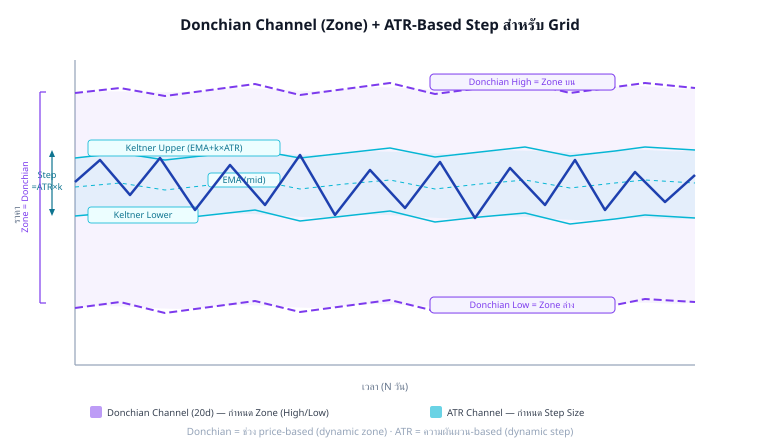

Grid Trading Mastery · Part 3
Zone Sizing — ATR, Donchian, Keltner & Bootstrap
วิธีกำหนด Zone และ Step จากข้อมูลตลาด · Donchian Channel · Keltner Channel
Block Bootstrap Monte Carlo · GARCH Volatility Forecast
อ้างอิง:
Vol Series Part 2 (ATR/Volatility),
Statarb Ch.3 (OU Process)
แก่นของ Part นี้
Zone และ Step ไม่ควรตั้งแบบ "ลองดู" — ควรมาจากข้อมูล volatility ของตลาดจริง ATR บอก "ราคาเดินกี่ USD/วัน" → ใช้ตั้ง Step | Donchian Channel บอก "range ของตลาดในช่วงนี้" → ใช้ตั้ง Zone
Step ≈ 0.5 × ATR(14) · Zone = Donchian(20) · Keltner = EMA ± ATR × k
3.1 ATR — ตัววัด Volatility สำหรับ Step
ATR (Average True Range) วัด "ขนาดเฉลี่ยของการเคลื่อนไหวต่อวัน" — เหมาะมากสำหรับกำหนด Step ของ grid:
$$\text{ATR}(n) = \frac{1}{n} \sum_{i=1}^{n} \text{TR}_i \quad \text{โดย} \quad \text{TR}_i = \max(H_i - L_i,\ |H_i - C_{i-1}|,\ |L_i - C_{i-1}|)$$
หลักการ: Step ควรเป็น "หนึ่งหน่วยของความผันผวน"
BTC/USDT — ATR(14) = $2,500/วัน
Step ที่แนะนำ:
Step_tight = 0.25 × ATR = $625 → fill บ่อย แต่ fee สูง
Step_moderate = 0.50 × ATR = $1,250 → สมดุล (แนะนำ)
Step_wide = 1.00 × ATR = $2,500 → fill น้อย cashflow ต่ำ แต่ตาม volatility พอดี
Rule of Thumb: ตั้ง Step ≈ 0.5 × ATR(14)
→ ราคาต้อง "เดินครึ่งวัน" เพื่อ complete 1 grid cycle
→ ไม่ fill ถี่เกินไป (fee ไม่กิน profit)
→ ไม่ช้าเกินไปจนไม่ได้ทำเงิน
ตรวจสอบ: กำไรต่อรอบ > 3 × ค่า Fee ต่อรอบ
Q × Step > 3 × (Q × P × 0.1% × 2)
Step > 3 × P × 0.002 = 3 × $100k × 0.002 = $600
∴ Step ≥ $600 สำหรับ BTC ที่ $100k
ทำไม ATR(14) ไม่ใช่ ATR(7) หรือ ATR(30)?
ATR(7) = ตอบสนองเร็วเกินไป — volatility spike 2 วันทำให้ Step พุ่งแล้วหด grid ปรับถี่เกิน
ATR(14) = 2 สัปดาห์ = ค่ากลางที่ดี: ตาม regime ปัจจุบัน แต่ไม่ noisy
ATR(30) = ตามช้าเกินไป — ใน volatility cluster ที่ ATR พุ่งแล้ว ATR(30) ยังต่ำ = step เล็กเกิน
3.2 Donchian Channel — กำหนด Zone จาก Price Range
Donchian Channel(N) = highest high − lowest low ของ N periods ที่ผ่านมา:
$$\text{Donchian}_\text{high}(N) = \max_{i=0}^{N-1}(H_{t-i}) \qquad \text{Donchian}_\text{low}(N) = \min_{i=0}^{N-1}(L_{t-i})$$

Donchian Channel (กว้าง, สีม่วง) กำหนด Zone · Keltner Channel (แคบ, สีฟ้า) กำหนด Step · ราคาแกว่งภายใน Keltner มากกว่า 68% ของเวลา
Donchian Zone Sizing:
# Zone = Donchian(20) — range ของ 20 วันที่ผ่านมา
zone_high = max(high[-20:]) # highest high 20 วัน
zone_low = min(low[-20:]) # lowest low 20 วัน
ตัวอย่าง BTC:
20-day high = $108,000
20-day low = $91,000
Zone width = $17,000
# เพิ่ม buffer 10% เพื่อรองรับ breakout
zone_high_buffered = zone_high * 1.05 # $113,400
zone_low_buffered = zone_low * 0.95 # $86,450
# ทดสอบ: zone กว้างพอไหม?
min_zone_width = ATR(14) * 6 # อย่างน้อย 6 ATR = 6 ×$2,500 = $15,000
if zone_width < min_zone_width:
zone_high = current_price * 1.08 # ขยายเป็น ±8%
zone_low = current_price * 0.92
Donchian(20) vs Donchian(30) vs Donchian(60)
- Donchian(20) — ≈ 1 เดือน trading: ตาม regime ปัจจุบัน ปรับตัวเร็ว เหมาะ swing grid
- Donchian(30) — ≈ 6 สัปดาห์: สมดุล หน้าต่างยอดนิยม (แนะนำ)
- Donchian(60) — ≈ 3 เดือน: zone กว้าง grid อยู่ได้นาน แต่ capital ใช้มาก
เลือกตาม holding period ที่วางแผน: grid 1 เดือน → Donchian(20); grid 3 เดือน → Donchian(60)
3.3 Keltner Channel — Step จาก ATR Bands
Keltner Channel ใช้ EMA เป็น midline + ATR เป็น band width — เหมาะสำหรับกำหนด Step ที่ "ตาม volatility อย่าง adaptive":
$$\text{KC}_\text{upper} = \text{EMA}(20) + k \times \text{ATR}(14) \qquad \text{KC}_\text{lower} = \text{EMA}(20) - k \times \text{ATR}(14)$$
Keltner-Based Step Sizing:
k = 1.0 (standard Keltner bandwidth = 1 ATR each side)
KC_upper = EMA(20) + 1.0 × ATR(14) = $100k + $2,500 = $102,500
KC_lower = EMA(20) − 1.0 × ATR(14) = $100k − $2,500 = $97,500
KC_width = $5,000 (total 2 ATR range)
# Step = Keltner half-width / desired levels per ATR
desired_levels_per_atr = 2 # 2 grid levels ต่อ 1 ATR ฝั่ง
step = ATR(14) / desired_levels_per_atr = $2,500 / 2 = $1,250
หรือ: step = KC_width / total_levels_in_keltner_zone
= $5,000 / 4 levels = $1,250
ข้อดี Keltner Step:
+ Step ปรับตาม volatility อัตโนมัติ
+ ช่วง volatility สูง: ATR สูง → step ใหญ่ → fill ช้าลง (ป้องกัน overtrading)
+ ช่วง volatility ต่ำ: ATR ต่ำ → step เล็ก → fill บ่อยขึ้น (เก็บ cashflow)
3.3.1 Adaptive Step Implementation
def adaptive_step(atr14, current_price, fee_rate=0.001):
"""
คำนวณ step ที่ปรับตาม ATR โดยรับประกันว่ากำไรต่อรอบ > 3× fee
"""
# Step พื้นฐาน = 0.5 × ATR
step_base = 0.5 * atr14
# ตรวจสอบ fee threshold
fee_per_cycle = current_price * fee_rate * 2 # buy + sell
min_step = 3 * fee_per_cycle # กำไร ≥ 3× fee
step = max(step_base, min_step)
# Round ให้สวยงาม (nearest 100 USD สำหรับ BTC)
step = round(step / 100) * 100
return step
# ตัวอย่าง:
# ATR(14) = $2,500, P = $100k, fee = 0.1%
# step_base = $1,250
# fee_per_cycle = $100k × 0.001 × 2 = $200
# min_step = $600
# step = max($1,250, $600) = $1,250 → round → $1,300
3.4 Combining Donchian + Keltner — Dual Channel Method
วิธีที่ดีที่สุด: ใช้ทั้งสองร่วมกัน — Donchian กำหนด Zone (wide), Keltner กำหนด Step (inner)
| Parameter | วิธีคำนวณ | ตัวอย่าง BTC |
|---|
| Zone High | Donchian(30) high × 1.05 | $108k × 1.05 = $113,400 |
| Zone Low | Donchian(30) low × 0.95 | $91k × 0.95 = $86,450 |
| Step | ATR(14) × 0.5 (Keltner-based) | $2,500 × 0.5 = $1,250 |
| N (levels) | (Zone_high − Zone_low) / Step | ($113,400 − $86,450) / $1,250 ≈ 22 levels |
| Q (per level) | grid_capital / (N × avg_price) | $20k / (22 × $100k) = 0.0091 BTC ≈ 0.009 |
def dual_channel_sizing(prices, highs, lows, current_price,
dc_period=30, atr_period=14, grid_capital=20000):
"""
Zone จาก Donchian(30), Step จาก ATR(14)
"""
# Donchian Zone
dc_high = max(highs[-dc_period:]) * 1.05
dc_low = min(lows[-dc_period:]) * 0.95
# ATR Step
true_ranges = []
for i in range(1, atr_period + 1):
tr = max(highs[-i] - lows[-i],
abs(highs[-i] - prices[-i-1]),
abs(lows[-i] - prices[-i-1]))
true_ranges.append(tr)
atr = sum(true_ranges) / len(true_ranges)
step = round(0.5 * atr / 100) * 100 # round to $100
# Grid Parameters
n_levels = int((dc_high - dc_low) / step)
avg_price = (dc_high + dc_low) / 2
q_per_level = grid_capital / (n_levels * avg_price)
return {
"zone_high": dc_high,
"zone_low": dc_low,
"step": step,
"n_levels": n_levels,
"q_per_level": round(q_per_level, 4)
}
3.5 Block Bootstrap — Zone Sizing ที่แข็งแกร่ง
Donchian ดูแค่ high/low ในช่วงเวลา แต่ไม่บอกว่า "ความน่าจะเป็นที่ราคาจะอยู่ในช่วงนี้" คือเท่าไหร่ Block Bootstrap ช่วยตอบคำถามนี้
⚠️ Bootstrap วัด Path Excursion ไม่ใช่ Final Price
สำหรับ Grid Trading: สิ่งที่สำคัญคือ ราคาต่ำสุดระหว่างทาง (max path excursion) ไม่ใช่ราคาสุดท้าย — grid ต้องอยู่รอดตลอด path ไม่ใช่แค่ตอนสิ้นสุด
ฟังก์ชันด้านล่างคำนวณทั้ง final price และ min_price_in_path — ใช้ p5_min_path (5th percentile ของราคาต่ำสุด) เป็นตัวกำหนด zone_low
แนวคิด Block Bootstrap Monte Carlo:
1. เก็บ daily return ของ BTC ย้อนหลัง 90 วัน
2. สุ่ม "blocks" ของ return (ขนาด block = 5 วัน) → เพื่อรักษา autocorrelation
3. ประกอบ synthetic price path จาก blocks ที่สุ่มได้
4. ทำซ้ำ 1,000 ครั้ง → ได้ distribution ของ "ราคาจะไปถึงไหนใน 30 วัน"
5. ใช้ percentile 5 และ 95 เป็น zone boundaries
(ใช้ min_price_in_path สำหรับ zone_low — grid ต้องอยู่รอดตลอด path)
def block_bootstrap_zone(daily_returns, n_sim=1000, horizon=30,
block_size=5, start_price=100000):
"""
Bootstrap zone boundaries ด้วย 95% confidence interval
คำนวณทั้ง final price และ min_price_in_path (path excursion metric)
สำหรับ grid trading: zone_low ควรใช้ p5_min_path ไม่ใช่ p5_final
เพราะ grid ต้องอยู่รอดตลอด path — ไม่ใช่แค่ตอนสิ้นสุด
"""
import random
final_prices = []
min_prices_in_path = [] # path excursion metric: ราคาต่ำสุดระหว่างทาง
for _ in range(n_sim):
price = start_price
min_price = start_price # ติดตามราคาต่ำสุดตลอด path
days = 0
while days < horizon:
# สุ่ม block ของ returns
start_idx = random.randint(0, len(daily_returns) - block_size)
block = daily_returns[start_idx : start_idx + block_size]
for r in block:
price *= (1 + r)
min_price = min(min_price, price) # บันทึก worst excursion
days += 1
if days >= horizon:
break
final_prices.append(price)
min_prices_in_path.append(min_price) # max drawdown from start
# Zone จาก final price (95% CI ของ final distribution)
final_prices.sort()
p5_final = final_prices[int(0.05 * n_sim)] # 5th percentile final
p95_final = final_prices[int(0.95 * n_sim)] # 95th percentile final
# Path excursion metric: zone_low ควรใช้ค่านี้แทน p5_final
# เพราะ grid ต้องอยู่รอดตลอด path ไม่ใช่แค่ตอนสิ้นสุด
min_prices_in_path.sort()
p5_min_path = min_prices_in_path[int(0.05 * n_sim)] # worst 5% path low
return {
"zone_low": p5_min_path, # ใช้ path excursion เป็น zone_low
"zone_high": p95_final, # 95th percentile final price
"p5_final": p5_final, # final price 5th pctile (reference)
"p5_min_path": p5_min_path, # path excursion 5th pctile (primary)
}
ตัวอย่าง BTC:
1,000 simulations, 30-day horizon
p5_final = $87,500 (ราคาสุดท้าย 5th pctile — ไม่พอสำหรับ grid)
p5_min_path = $84,200 (ราคาต่ำสุดระหว่างทาง 5th pctile — ใช้เป็น zone_low)
p95_final = $119,800 (95th pctile)
→ Zone: $84k–$120k (grid ต้องอยู่รอดถึง $84k ระหว่างทาง)
การเลือก block_size
block_size=5 (วัน) เป็นค่าเริ่มต้นที่สมเหตุสมผลสำหรับ BTC แต่ควร test หลายค่า:
- block_size เล็ก (3–5): ล้อมรับ autocorrelation สั้น (ความผันผวนรายวัน)
- block_size ใหญ่ (10–20): ล้อมรับ momentum / trend ยาวกว่า
- วิธีที่ดีกว่า: Politis-Romano Stationary Bootstrap (ไม่ต้องกำหนด block_size ตายตัว) — ใช้
arch library: from arch.bootstrap import StationaryBootstrap
ทำไม Block Bootstrap ดีกว่า Simple Historical Range?
- Simple range: max − min ของ 30 วัน — อาจกว้างเกิน (ถ้ามี spike) หรือแคบเกิน (ถ้าช่วง low-vol)
- Block Bootstrap: preserve autocorrelation (volatility cluster), ให้ probabilistic range ที่ถูกกว่า
- Zone จาก 95% CI หมายความว่า: "90% ของ scenarios ราคาอยู่ใน zone นี้" — เข้าใจง่าย จัดการ capital ได้ตาม probability
3.6 GARCH(1,1) สำหรับ Volatility-Adaptive Step
GARCH(1,1) จาก Vol Series ให้ค่า volatility forecast ที่ดีกว่า ATR ธรรมดาในช่วง volatility cluster:
$$\sigma_t^2 = \omega + \alpha \cdot \epsilon_{t-1}^2 + \beta \cdot \sigma_{t-1}^2$$
GARCH Step Sizing:
# สมมติ GARCH fitted: ω=1e-6, α=0.08, β=0.91
# σ_today = 0.025 (2.5% daily vol)
sigma_daily = 0.025 # จาก GARCH forecast
price = 100000
# 1-day VaR = σ × price
atr_garch = sigma_daily * price # = $2,500
# Step = 0.5 × GARCH-ATR (เหมือน ATR method แต่ forward-looking)
step = 0.5 * atr_garch # = $1,250
# ข้อดีของ GARCH vs ATR:
# ATR: backward-looking (เฉลี่ย 14 วันที่แล้ว)
# GARCH: forward-looking (forecast vol วันพรุ่งนี้จาก cluster ปัจจุบัน)
# ช่วง volatility เพิ่ง spike → GARCH ตอบสนองเร็วกว่า ATR(14)
# Practical: ถ้าไม่ fit GARCH เอง → ใช้ implied vol จาก options
# IV ของ BTC 7-day ATM option = 65% annualized
# σ_daily = 65% / sqrt(365) = 3.4%/day → ATR_implied = $3,400
3.7 Volatility Regime — ปรับ Zone/Step ตาม Regime
Zone และ Step ไม่ใช่ fixed — ควรปรับตาม volatility regime ปัจจุบัน:
| Regime | ATR (BTC ตัวอย่าง) | Step แนะนำ | Zone Width | N Levels |
|---|
| Low Vol (Consolidation) | $1,000–$1,500 | $500–$700 | $8k–$12k | 16–24 |
| Normal Vol | $1,500–$3,000 | $750–$1,500 | $15k–$25k | 16–22 |
| High Vol | $3,000–$5,000 | $1,500–$2,500 | $25k–$40k | 16–22 |
| Extreme Vol (Crash/Pump) | >$5,000 | $2,500+ | $40k+ | ≤ 16 |
def vol_regime_step(atr14, current_price):
"""
กำหนด step ตาม vol regime โดยรักษา N ≈ 16–22 levels
"""
atr_pct = atr14 / current_price
if atr_pct < 0.015: # Low vol: ATR < 1.5%
regime = "low"
step_factor = 0.35
elif atr_pct < 0.030: # Normal: ATR 1.5–3%
regime = "normal"
step_factor = 0.50
elif atr_pct < 0.050: # High: ATR 3–5%
regime = "high"
step_factor = 0.60
else: # Extreme: ATR > 5%
regime = "extreme"
step_factor = 0.70
step = round(step_factor * atr14 / 100) * 100
return regime, step
3.8 Practical Zone Validation Checklist
ก่อน deploy grid ทุกครั้ง ตรวจสอบ 5 ข้อนี้:
def validate_zone(zone_high, zone_low, step, current_price, atr14,
grid_capital, q_per_level, fee_rate=0.001):
"""
ตรวจสอบ zone ก่อน deploy
Returns: list of (check_name, passed, message)
"""
checks = []
# 1. Current price อยู่ใน zone
in_zone = zone_low < current_price < zone_high
checks.append(("Price in Zone", in_zone,
f"P={current_price:,} Zone=[{zone_low:,},{zone_high:,}]"))
# 2. Zone กว้างพอ (≥ 6 ATR)
zone_width = zone_high - zone_low
wide_enough = zone_width >= 6 * atr14
checks.append(("Zone Width", wide_enough,
f"Width={zone_width:,.0f} Min={6*atr14:,.0f} (6×ATR)"))
# 3. Step ≥ 3× fee per cycle
profit_per_cycle = q_per_level * step
fee_per_cycle = q_per_level * current_price * fee_rate * 2
profitable = profit_per_cycle > 3 * fee_per_cycle
checks.append(("Profitability", profitable,
f"Profit/cycle=${profit_per_cycle:.1f} Fee=${fee_per_cycle:.1f}"))
# 4. Capital พอสำหรับ worst case
n_buy_levels = (current_price - zone_low) / step
worst_case_capital = n_buy_levels * q_per_level * current_price * 0.9
capital_ok = grid_capital >= worst_case_capital
checks.append(("Capital Sufficient", capital_ok,
f"Grid=${grid_capital:,} WorstCase=${worst_case_capital:,.0f}"))
# 5. N levels ≤ 30 (manageable)
n_total = int(zone_width / step)
manageable = n_total <= 30
checks.append(("N Levels OK", manageable, f"N={n_total}"))
return checks
3.9 Running Example — BTC Zone Sizing จากศูนย์
🔁 Running Example: คำนวณ Zone + Step สำหรับ BTC/USDT
ข้อมูล: BTC = $102,000 · ATR(14) = $2,800 · Donchian(30): high=$112,000 low=$89,000
Step 1: Zone จาก Donchian(30) + Buffer
zone_high = $112,000 × 1.05 = $117,600 → ปัดเป็น $117,000 (round)
zone_low = $89,000 × 0.95 = $84,550 → ปัดเป็น $85,000
zone_width = $117,000 − $85,000 = $32,000
Step 2: ตรวจสอบ minimum zone width
min_width = 6 × ATR(14) = 6 × $2,800 = $16,800
$32,000 > $16,800 ✓
Step 3: Step จาก ATR
step_base = 0.5 × $2,800 = $1,400
fee_min = 3 × ($102k × 0.001 × 2) = $612
step = max($1,400, $612) = $1,400 → round to nearest $500 = $1,500
Step 4: N และ Q
N = $32,000 / $1,500 ≈ 21 levels
grid_capital = $20,000 (สมมติ)
avg_price = ($117k + $85k) / 2 = $101,000
Q = $20,000 / (21 × $101,000) = 0.00943 BTC ≈ 0.009 BTC
Step 5: Validation
✓ Price in zone: $102k ∈ [$85k, $117k]
✓ Zone width: $32k > $16.8k
✓ Profitability: 0.009 × $1,500 = $13.5 vs fee $1.84/cycle → 7.3× ✓
✓ N levels: 21 ≤ 30 ✓
Step 6: Distribution ของ BUY orders (Asymmetric Zone Part 1A)
ราคาปัจจุบัน $102k → ใกล้กลาง zone
Upper zone ($102k → $117k): ใส่ SELL รอ หรือไม่วาง order
Lower zone ($102k → $85k): วาง BUY orders 11 levels × 0.009 BTC
Capital ที่ต้องใช้ worst-case: 11 × 0.009 × $93k (avg) = $9,207
3.10 แบบฝึกหัด
แบบฝึกหัด Part 3
ข้อ 1: BTC = $95,000 · ATR(14) = $3,200 · Fee = 0.1% — Step ที่แนะนำคือเท่าไหร่?
คำตอบ:
step_base = 0.5 × $3,200 = $1,600
fee_min = 3 × ($95,000 × 0.001 × 2) = 3 × $190 = $570
Step = max($1,600, $570) = $1,600 → ปัดเป็น $1,500 หรือ $2,000 (nearest $500)
แนะนำ: $1,500 (conservative, fill บ่อยกว่า) หรือ $2,000 (ถ้า transaction cost สูง)
ข้อ 2: Donchian(30) high=$108k, low=$88k · Buffer=5% · Current=$100k — Zone boundaries คืออะไร? ราคา in-zone ไหม?
คำตอบ:
zone_high = $108,000 × 1.05 = $113,400
zone_low = $88,000 × 0.95 = $83,600
zone_width = $113,400 − $83,600 = $29,800
Current price $100,000 ∈ [$83,600, $113,400] → In Zone ✓
ราคาอยู่ที่ประมาณ 55% ของ zone width นับจากล่าง
ข้อ 3: Grid capital $15,000 · N=20 levels · avg_price=$100k — Q per level คือเท่าไหร่? กำไรต่อรอบถ้า Step=$1,500?
คำตอบ:
Q = $15,000 / (20 × $100,000) = $15,000 / $2,000,000 = 0.0075 BTC
กำไรต่อรอบ (gross) = Q × Step = 0.0075 × $1,500 = $11.25
ค่า Fee = 0.0075 × $100k × 0.1% × 2 = $1.50
กำไรสุทธิต่อรอบ = $11.25 − $1.50 = $9.75
Profit/Fee ratio = $11.25/$1.50 = 7.5× ✓ (ดีมาก, ควร ≥ 3×)
ข้อ 4 (Challenge): ATR ของ BTC ขึ้นจาก $2,000 → $5,000 ใน 1 สัปดาห์ (volatility spike) — ควรปรับ grid อย่างไร?
คำตอบ:
ATR เพิ่ม 2.5× → vol regime เปลี่ยนจาก Normal → High/Extreme
การปรับที่ควรทำ:
- Step เก่า $1,000 (0.5 × $2,000) → Step ใหม่ = 0.6 × $5,000 = $3,000
- Step ใหญ่ขึ้น 3× → N ลดลง (ถ้า zone เดิม $20k: N จาก 20 → 7 levels)
- ควร expand zone ด้วย Donchian ใหม่ → zone กว้างขึ้น
- ลด Q ลง 30–50% เพื่อลด capital at risk ในช่วง high vol
ระวัง: อย่าเพิ่ม step ทันทีระหว่างที่ grid กำลัง run — รอ grid cycle ปิดหรือทำ grid reset ก่อน
ข้อแนะนำ: ถ้า ATR พุ่งเกิน 3× baseline → พิจารณา pause grid ทั้งหมด (ดู Part 4 Regime Detection)